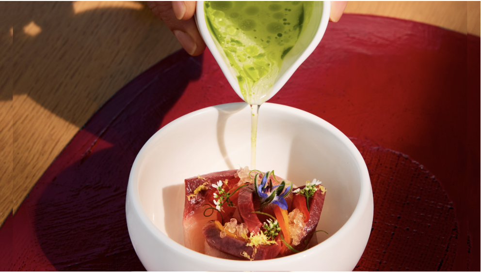

Rooted
Rooted is a creative modern eatery serving vegetarian takes on classic
Chinese fare. We are dedicated to creating plant-based dishes that are
still every bit authentic and delicious, and most importantly, for all
to enjoy. Here, we believe that everyone deserves a good meal, no matter
their unique needs or dietary restrictions. From fields to fork, we have
made it our mission to bring you a comforting plate of beloved Chinese
staples with a vegetarian flare, and we hope you’ll join us for this unique,
eye opening experience.
Sourcing Ingridients
Rooted is proud to identify as a farm-to-table restaurant. When crafting
each dish, we always prioritize incorporating fresh, high quality ingredients
in the food served, while simultaneously supporting local farmers and promoting
agricultural sustainability. Farm-to-table means that instead of buying from
large distributors, who may add preservatives and other harmful materials to
their products, our food is directly sourced from nearby farms. As environmental
and agricultural conservation become increasingly relevant within our ever-changing
world, we are completely devoted to participating in eco-friendly practices,
regarding our food sourcing and preparation procedures. That being said, you can have
full confidence that our ingredients are 100% organic, natural, and cruelty free; from
the Earth and full of flavor.